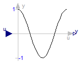
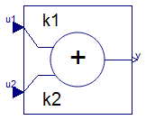
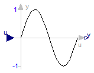
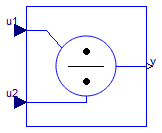
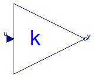

Modelica.Blocks.Math.Cos
Modelica.Blocks.Math.Cos
Modelica.Blocks.Math.Cos
Modelica.Blocks.Math.Cos
Output the cosine of the input

This blocks computes the output y as cos of the input u:
y = cos( u );
/Dymola%202017%20FD01/Modelica/Library/Modelica%203.2.2/Resources/Images/Math/cos.png)
Extends from Interfaces.SISO (Single Input Single Output continuous control block).
| Type | Name | Description |
|---|---|---|
| input RealInput | u | Connector of Real input signal |
| output RealOutput | y | Connector of Real output signal |
Modelica_Blocks_Math.html
 Modelica.Blocks.Math.Add
Modelica.Blocks.Math.Add
Output the sum of the two inputs

This blocks computes output y as sum of the two input signals u1 and u2:
y = k1*u1 + k2*u2;
Example:
parameter: k1= +2, k2= -3
results in the following equations:
y = 2 * u1 - 3 * u2
Extends from Interfaces.SI2SO (2 Single Input / 1 Single Output continuous control block).
| Type | Name | Default | Description |
|---|---|---|---|
| Real | k1 | +1 | Gain of upper input |
| Real | k2 | +1 | Gain of lower input |
| Type | Name | Description |
|---|---|---|
| input RealInput | u1 | Connector of Real input signal 1 |
| input RealInput | u2 | Connector of Real input signal 2 |
| output RealOutput | y | Connector of Real output signal |
Modelica_Blocks_Math.html
 Modelica.Blocks.Math.Mean
Modelica.Blocks.Math.Mean
Calculate mean over period 1/f

This block calculates the mean of the input signal u over the given period 1/f:
1 T - ∫ u(t) dt T 0
Note: The output is updated after each period defined by 1/f.
If parameter yGreaterOrEqualZero in the Advanced tab is true (default = false), then the modeller provides the information that the mean of the input signal is guaranteed to be ≥ 0 for the exact solution. However, due to inaccuracies in the numerical integration scheme, the output might be slightly negative. If this parameter is set to true, then the output is explicitly set to 0.0, if the mean value results in a negative value.
Extends from Modelica.Blocks.Interfaces.SISO (Single Input Single Output continuous control block).
| Type | Name | Default | Description |
|---|---|---|---|
| Frequency | f | Base frequency [Hz] | |
| Real | x0 | 0 | Start value of integrator state |
| Advanced | |||
| Boolean | yGreaterOrEqualZero | false | =true, if output y is guaranteed to be >= 0 for the exact solution |
| Type | Name | Description |
|---|---|---|
| input RealInput | u | Connector of Real input signal |
| output RealOutput | y | Connector of Real output signal |
Modelica_Blocks_Math.html
 Modelica.Blocks.Math.Sin
Modelica.Blocks.Math.Sin
Output the sine of the input

This blocks computes the output y as sine of the input u:
y = sin( u );
/Dymola%202017%20FD01/Modelica/Library/Modelica%203.2.2/Resources/Images/Math/sin.png)
Extends from Interfaces.SISO (Single Input Single Output continuous control block).
| Type | Name | Description |
|---|---|---|
| input RealInput | u | Connector of Real input signal |
| output RealOutput | y | Connector of Real output signal |
Modelica_Blocks_Math.html
 Modelica.Blocks.Math.Division
Modelica.Blocks.Math.Division
Output first input divided by second input

This block computes the output y (element-wise) by dividing the corresponding elements of the two inputs u1 and u2:
y = u1 / u2;
Extends from Interfaces.SI2SO (2 Single Input / 1 Single Output continuous control block).
| Type | Name | Description |
|---|---|---|
| input RealInput | u1 | Connector of Real input signal 1 |
| input RealInput | u2 | Connector of Real input signal 2 |
| output RealOutput | y | Connector of Real output signal |
Modelica_Blocks_Math.html
 Modelica.Blocks.Math.Gain
Modelica.Blocks.Math.Gain
Output the product of a gain value with the input signal

This block computes output y as product of gain k with the input u:
y = k * u;
| Type | Name | Default | Description |
|---|---|---|---|
| Real | k | Gain value multiplied with input signal [1] |
| Type | Name | Description |
|---|---|---|
| input RealInput | u | Input signal connector |
| output RealOutput | y | Output signal connector |
Modelica_Blocks_Math.html